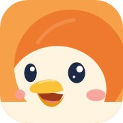
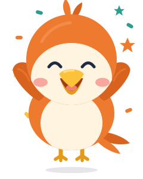

组件状态参考 v0.2（儿童版）· forced states shown with .is-hover / .is-focus / .is-active (docs only) · 儿童可点区域 ≥ 56px
idle / listeningtalkinghandoff · your turn thinking (processing)
thinking (processing)
celebrate (3 stars)White, border cream-200, radius 20 (kid cards 26), shadow xs.
cream-100 fill, no shadow.
shadow md, lift −2px, 200 ms.